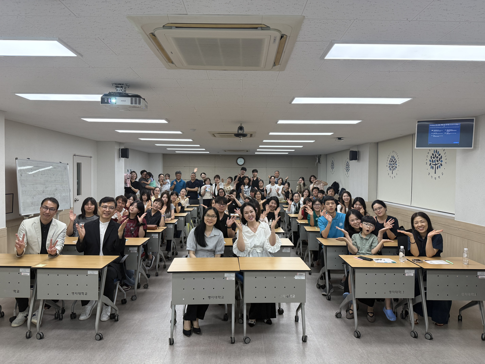
One Day 문화예술선교학교 & YOV:EL 쇼케이스는 문화예술을 통해 복음을 나누고, 다음세대 예술가들이 함께 비전과 열정을 나누는 아하바프레이즈선교연합의 하루 과정입니다.
나진영 선교사의 「경기장의 주인, 하나님!!! (Go Forward)」, 김수진 교수의 「시작, 하나님의 아름다움에 응답하다」 강의와 함께 YOV:EL 기독청년예술연합의 성악·무용·플룻 연주·요벨 소개 무대가 이어졌습니다.
YOV:EL은 하나님과 함께하는 승리의 해를 뜻하며, 예술과 우리의 삶을 회복하고 자유롭게 찬양하는 기독청년예술연합입니다.
Photos & Program
행사 사진과 프로그램
문화예술선교학교의 안내 포스터, 강의·쇼케이스 프로그램, 그리고 함께한 현장을 담았습니다.
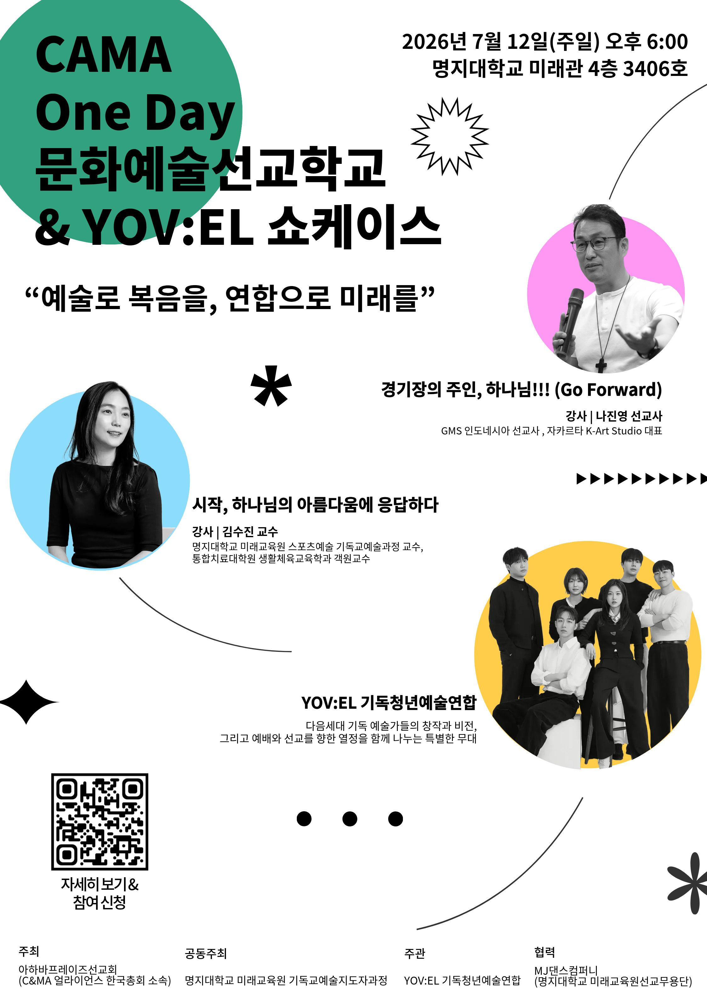
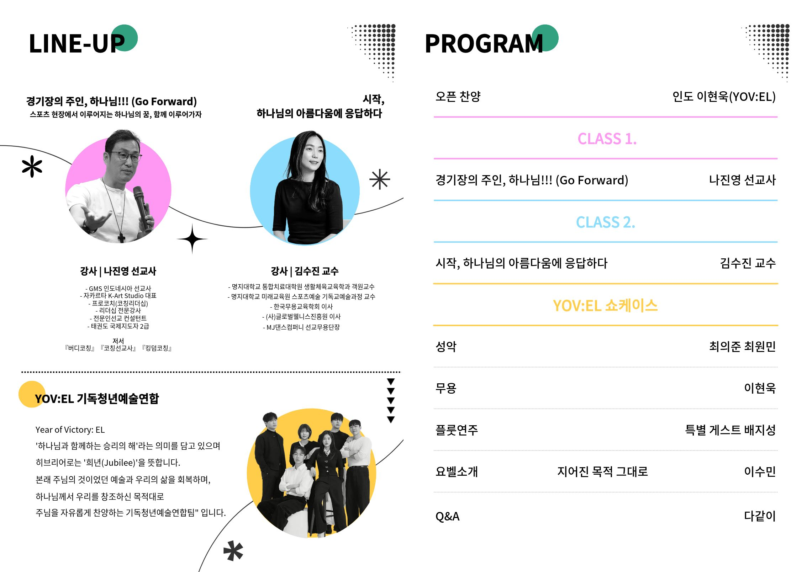
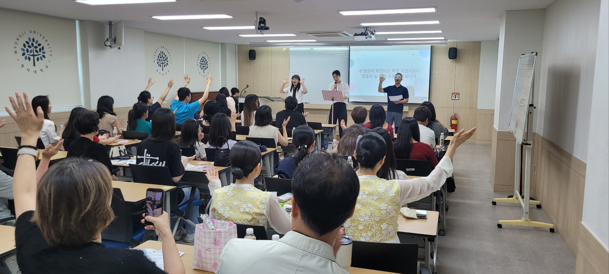
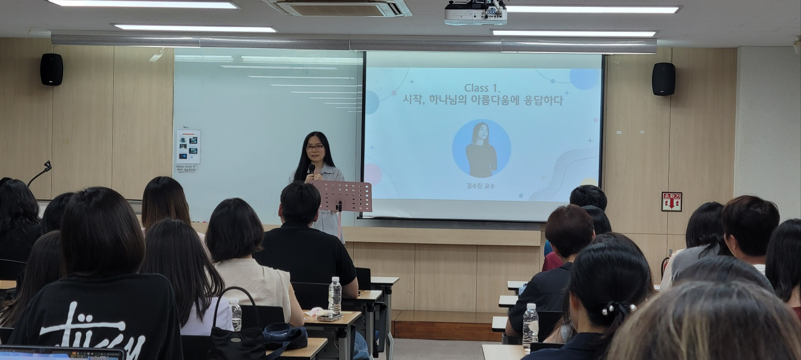
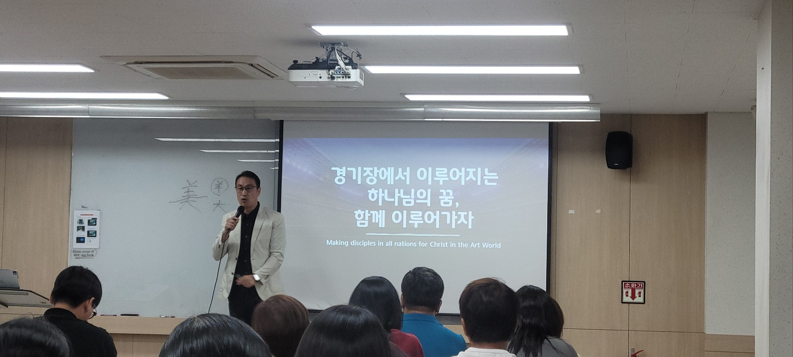
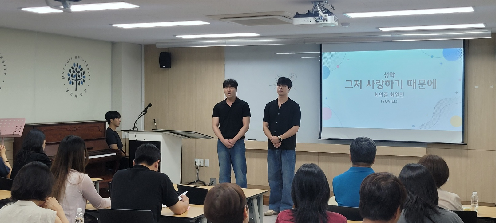
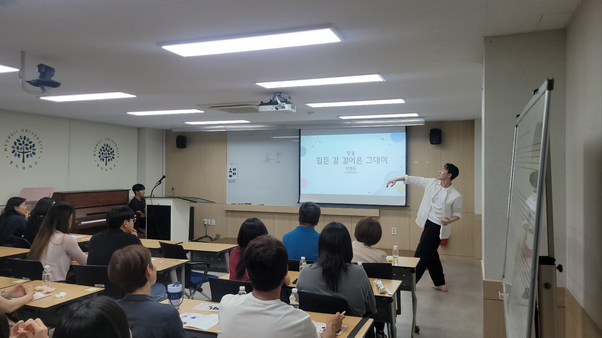
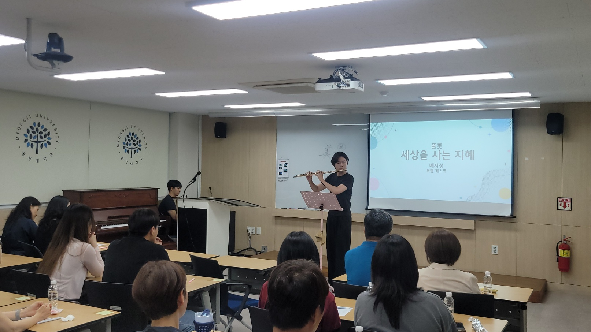
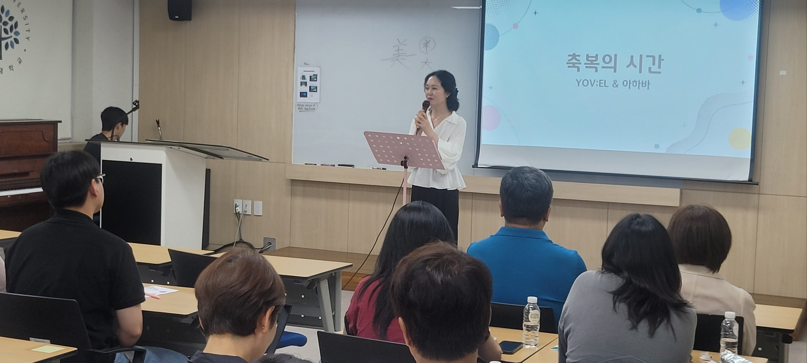
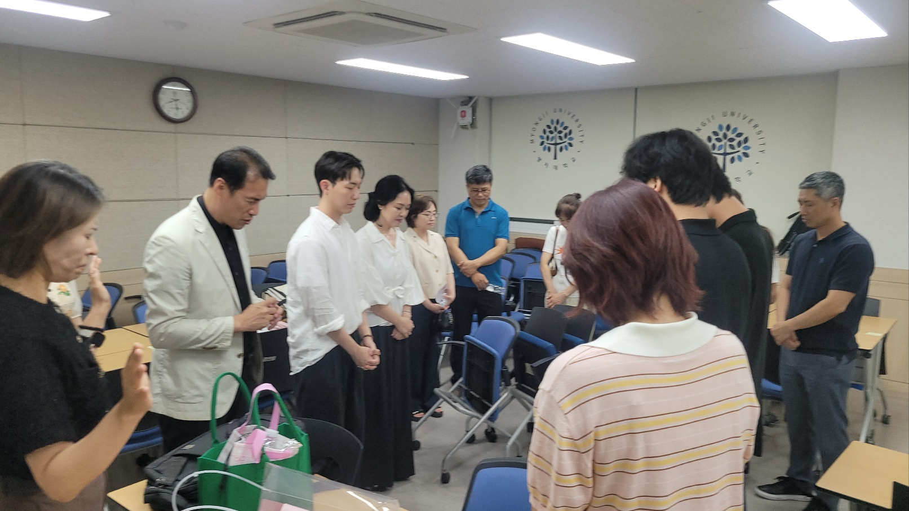
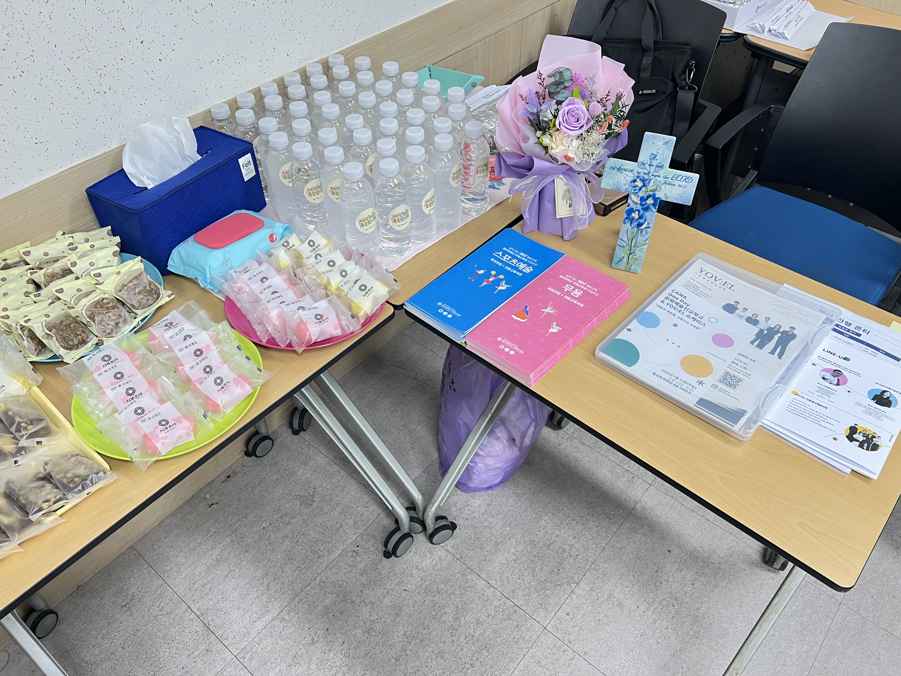